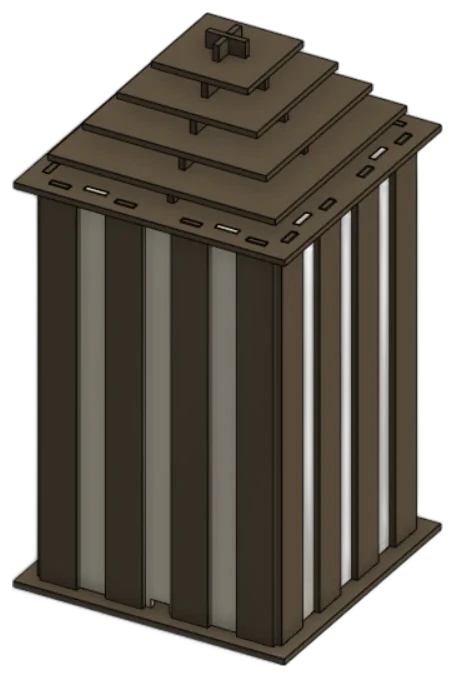
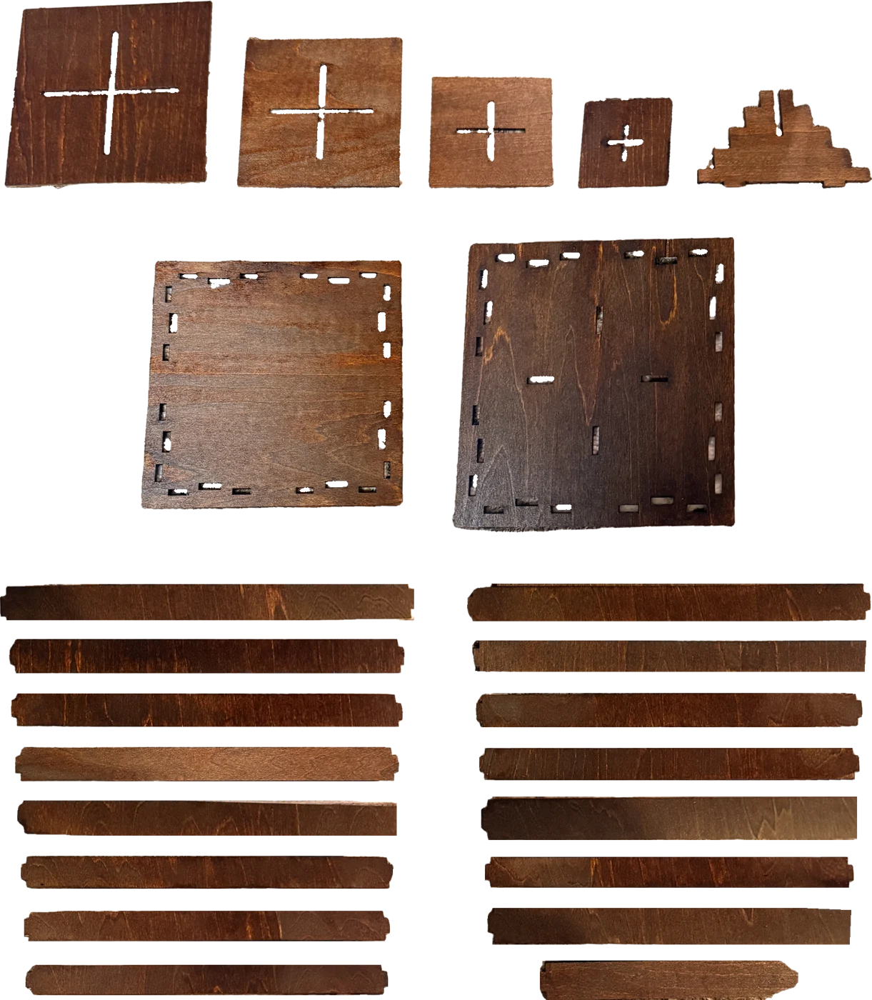

things I made
hardgoods
A chair, a bag and a lamp, from the first model to the finished piece.
lamp
A laser cut, stained wood lamp: square plates with cross slots, long slats and a stepped roof.



things I made
A chair, a bag and a lamp, from the first model to the finished piece.
A laser cut, stained wood lamp: square plates with cross slots, long slats and a stepped roof.

